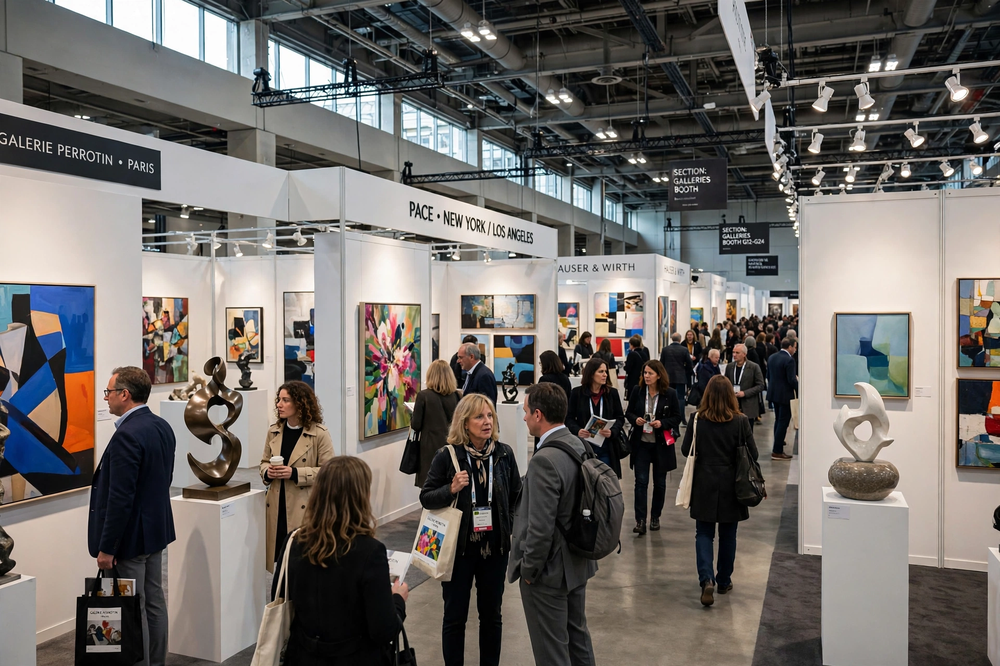

An art fair is a commercial event at which art galleries exhibit and sell works to collectors, curators and the public over a few days. Art fairs became a dominant force in the contemporary art market from the late 20th century.

Art Basel, founded in Basel, Switzerland in 1970 by gallerists including Ernst Beyeler, expanded to Miami Beach (2002) and Hong Kong (2013), and is generally considered the leading fair brand. Other major fairs include Frieze (London, New York, Los Angeles, Seoul), TEFAF (Maastricht and New York, strong in Old Masters and antiques), The Armory Show (New York) and Art Cologne, among the oldest fairs, founded 1967.
Galleries pay for booths and are selected by committees. Fairs concentrate sales, networking and institutional scouting into "art weeks" that also feature satellite fairs, auctions and museum shows. Critics note "fair fatigue", homogenisation and pressure on mid-sized galleries, while supporters stress global reach and discovery.